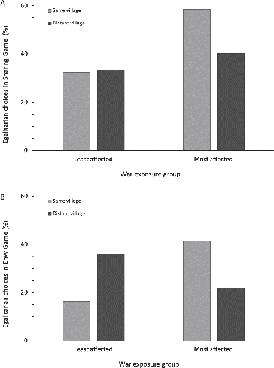
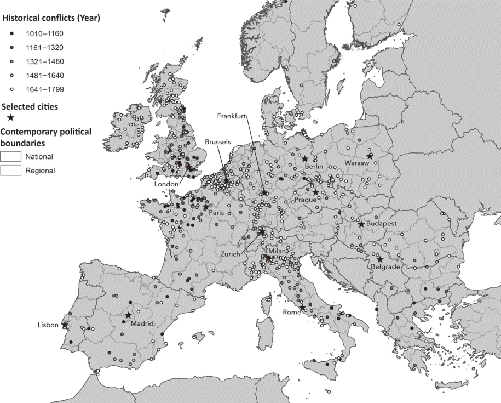
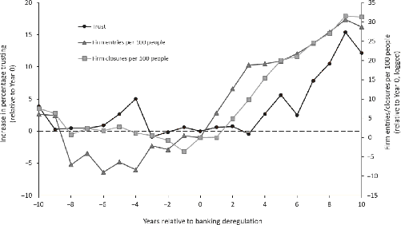
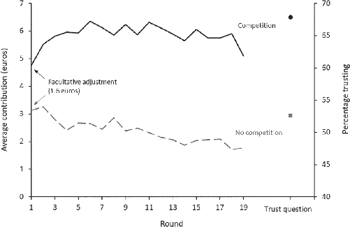
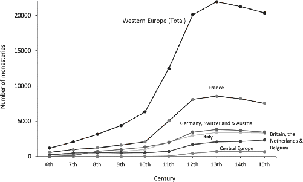
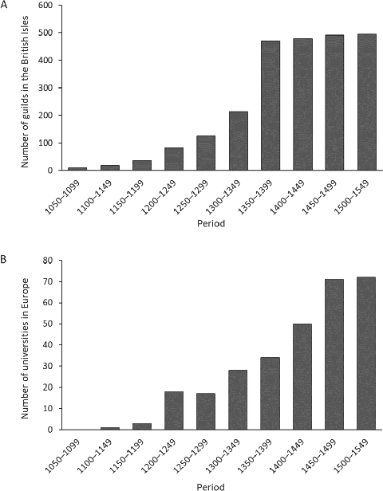

But warfare, it can be concluded, is an especially effective means of promoting social cohesion in that it provides an occasion upon which the members of the society unite and submerge their factional differences in the vigorous pursuit of a common purpose.
—anthropologist Robert F. Murphy (1957, p. 1034), ethnographer of the Amazonian Mundurucú
Here’s a surprising claim: greater competition among voluntary associations, be they charter towns, universities, guilds, churches, monasteries, or modern firms, can raise people’s trust, fairness, and cooperation toward strangers. Historically, the proliferation of voluntary associations in Europe, from the High Middle Ages onward, led to greater and more enduring intergroup competition. This, in turn, has contributed to both increasing and then sustaining higher levels of impersonal prosociality. To understand why, let’s first look at how human psychology responds to intergroup competition and then consider the impact of war in Europe over the last millennium.
After decades of rising poverty, civil war erupted in the West African country of Sierra Leone in 1991. War-related violence ravaged the civilian population, mass killings occurred, children were coerced into soldiering, and war crimes piled up. Fighting spread throughout the entire country as villages were targeted by both rebel groups and government forces. Sometimes these armies were scouring regions for enemy enclaves, but other times they were looting peaceful communities, suppressing elections, or stealing alluvial diamonds to buy food and arms. Responding to these threats, many communities formed their own defensive militias, which were built on traditional institutions and chiefly authority. By its end in 2002, the war had taken the lives of over 50,000 civilians, displaced nearly half the population, and left thousands with amputations and other lifelong injuries.1
In 2010, a research team led by the economist Alessandra Cassar arrived in Sierra Leone with a battery of simple behavioral experiments designed to assess people’s motivations for fairness toward members of their own and other communities. In these experiments, villagers were anonymously paired in a one-off interaction with either a random person from their own village or someone from a distant village. In one experimental task, the Sharing Game, participants were given a choice between (A) 5,000 leones for themselves and 5,000 for the other person or (B) 7,500 leones for themselves and 2,500 for the other person. People could go with an even split (A), or they could increase their own payoff at a cost to the other person (B). Another task offered participants a choice between (A) 5,000 each for themselves and another person or (B) 6,500 for themselves and 8,000 for the other person. In this second task, the Envy Game, people could increase their own payoff by picking option B, but if they did, the other person would get more than they would. The stakes here were significant: 5,000 leones was about one day’s wage ($1.25) for an average Sierra Leonean.
This research team, which I later joined, went to Sierra Leone because they wanted to understand how the experience of war might change people. National surveys had suggested that the war had hit families and households to differing degrees, even within the same village. Some families had lost relatives, or had family members who had sustained serious injuries. Others had been displaced because their houses or fields had been destroyed. Some families had experienced both death and displacement. Building on national-level data, our team interviewed participants about their war exposure. About half had experienced some combination of death, injury, and displacement, while the other half hadn’t experienced any of these. I’ll refer to the former group as the “most affected” and the latter as the “least affected.” Of course, everyone was affected by the war, so our questions about displacement, injury, and death during the war were only meant to capture the war’s relative impact.
People’s war experiences, which had all occurred at least eight years earlier, sharply affected their behavior in our experiments (Figure 10.1). In the Sharing Game, participants who had been least affected by the war picked the egalitarian choice about a third of the time, regardless of the receiver. By contrast, participants who had been most affected by the war were much more egalitarian toward their co-villagers than to those from distant villages. The percentage who split the money with co-villagers in the Sharing Game spiked from a third to nearly 60 percent when participants had been more affected by the war. In the Envy Game, greater war exposure dramatically increased the percentage of egalitarian choices for co-villagers, from 16 percent to 41 percent. That is, people who were hit harder by the war were more inclined to pay a cost of 1,500 leones to keep things even with their fellow villagers. However, with distant villagers the effect reversed: those who were more exposed to the war were half as likely to make the egalitarian choice. Taken together, these and other experiments suggest that war strengthens people’s egalitarian motivations, but only toward their in-groups.2
Crucially, unlike in many civil wars, most victims in Sierra Leone weren’t targeted for their ethnic or religious affiliations, and the country didn’t fracture along these lines. Both our analyses and larger national-level studies indicate that much of the violence experienced by ordinary villagers was effectively random. Militias would storm into a community, spraying bullets in all directions, and then torch the most conveniently located houses as villagers either hid or fled. This means that, as in the randomized control trials used to test the effectiveness of new medicines, individuals were largely afflicted by, or “dosed with,” war-related violence at random. This quasi-randomization allows us to cautiously infer that war is in fact causing the psychological changes captured in our experiments.3

Similar patterns emerged when players in a street soccer tournament were studied in Kenema, a regional capital in eastern Sierra Leone that was only 30 km (19 mi) from the rebel headquarters. Researchers studied male soccer players ranging in age from 14 to 31 years who were competing on neighborhood teams in a city tournament. Participants completed a battery of psychological experiments designed to assess their fairness and competitiveness toward both their own teammates (their neighbors) and those on other teams. To measure fairness, participants anonymously played a Dictator Game in which the receiver was either one of their teammates or a player from another team. To measure competitiveness, players were given 10 chances to throw a soccer ball into a basket four meters away. They could pick whether they wanted to (A) compete against another player, who was either their teammate or someone from another team, or (B) simply get paid 500 leones per basket. If players decided to compete (choice A), they’d get 1,500 leones for each basket but only if they beat their opponent’s score; if they lost, they’d get zero.
The results show that those who were more directly affected by the war were both more egalitarian with their own teammates and more competitive with those from other teams. Greater exposure to the war caused players to make higher (and more equal) offers to their own teammates in the Dictator Game but didn’t influence the offers that players made to participants who were not teammates. Similarly, in deciding whether to compete in the ball toss against non-teammates, those least affected by the war eschewed the opportunity, competing less than a quarter of the time, while those most affected by the war competed nearly 75 percent of the time. By contrast, war exposure didn’t influence players’ decisions to compete against their own teammates. These experimental patterns were mirrored in the soccer games: those least affected by the war received zero foul cards (for rule violations), while those most affected had nearly a 50 percent chance of getting at least one foul card. Here, the experience of war seems to again favor stronger egalitarian motivations for one’s in-group as well as greater competitiveness against out-groups.4
War’s psychological effects also seem to cash out in politics and civil society in Sierra Leone. Based on nationally representative surveys in 2005 and 2007 analyzed by the economists John Bellows and Ted Miguel, people who had been more directly afflicted by the war were more likely to attend community meetings, vote in elections, and join political or social groups. The data further suggest that more war-affected individuals were more likely to join school management committees and probably also more likely to participate in cooperative “road brushing” activities, which help to maintain local roads (a public good). These findings, which converge nicely with the experimental work discussed above, suggest that war experiences fueled people’s motivations to join voluntary associations and participate in community governance.5
The evidence for war’s enduring effects on people’s psychology and for its downstream influences on formal institutions are not limited to Sierra Leone. In recent years, a rapidly growing body of research from Nepal, Israel, Uganda, Burundi, Liberia, Central Asia, and the Caucasus reveal similar patterns using a variety of psychological experiments, including Ultimatum and Public Goods Games, as well as an array of survey questions about trust, voting, and participation in social groups. For example: after a decade of civil war in Nepal, communities that were exposed to more war-related violence cooperated more in a Public Goods Game (among community members); they were also more likely to vote and join local groups. In fact, while non-afflicted communities entirely lacked voluntary associations, 70 percent of the war-afflicted communities developed organizations like farming cooperatives, women’s coalitions, and youth groups. Here again, war fueled people’s motivations to join voluntary associations.6
To understand why war evokes these effects on human psychology, let’s recall some of the ideas developed in Chapters 2 to 4. With the emergence of cultural evolution in the last two million years, competition among bands, clans, and tribes drove the cultural spread of cooperative social norms that permitted groups to survive both violent conflicts with other groups and natural disasters like floods, earthquakes, droughts, and volcanic eruptions. Among the norms and beliefs favored by this cultural evolutionary process, we’ve seen examples related to food sharing, communal rituals, and incest taboos. Such norms, along with those concerning mutual aid and communal defense, enmesh individuals in a dense social network that they depend on to survive. Adapting to this ancestral world has left our species with a genetically evolved response to war and other shocks that likely operates in at least three ways. First, shocks spark our interdependence psychology, causing us to invest more heavily in the social ties and communities that we rely on. In the case of war, this depends on who the “us” is that’s being attacked. If people perceive that “Ilahita” is being attacked, then they bond more tightly with their fellow villagers and expect others to do the same. For those lacking strong interpersonal networks, shocks will propel them to seek out and invest in new relationships and communities. Second, because social norms have culturally evolved to promote group survival, war and other shocks may psychologically strengthen our commitment to these norms and related beliefs. So, to the degree that social norms prescribe various forms of cooperation, people will become more cooperative along normative lines and more willing to punish deviations from these standards.
These two psychological influences—solidifying interdependent groups and strengthening norms—combine with other aspects of our psychology to create the third effect: wars, earthquakes, and other disasters increase people’s religious commitments and ritual participation, resulting in the growth of religious groups. This occurs for a pair of interrelated reasons. First, by strengthening our social norms and related beliefs, wars and other shocks may directly deepen people’s faith and related commitments, which can inspire greater engagement in religious groups. Second, by stoking our interdependence psychology, shocks like war motivate people to either further invest in, or join, supportive communities. Because religious groups frequently offer mutual aid and support, this effect tends to increase participation in these groups. Greater investment in such groups often results in better attendance at church or the mosque, which can further strengthen supernatural beliefs (as a side effect). In addition to these effects, religions that promise people life after death and possess repetitive rituals that help individuals manage anxiety may get an especially big boost from the existential threats created by war and other disasters. People will be more attracted to religious groups and less likely to leave them compared to nonreligious communities.
This suggests that some religious groups offer a trifecta: (1) interdependent networks that provide mutual aid, (2) shared commitments to sacred norms, and (3) rituals and supernatural beliefs that help manage existential anxiety and uncertainty. In a world filled with war and other disasters, intergroup competition favors the spread of religious packages that furnish this trifecta because these religions will win in competition with groups lacking these crucial qualities (not because these religions are “true”).7
Indeed, there’s now ample evidence that both natural disasters and war deepen people’s religious commitments and ritual participation. By combining global data on the historical intensity of earthquakes, volcanic eruptions, and tropical storms with detailed surveys on religious beliefs from over a quarter of a million individuals in 90 or more countries, the economist Jeanet Bentzen has shown that people living in regions more prone to disasters are more religious, and that specifically they believe more strongly in god as well as heaven, hell, sin, and the devil. For every 1,000 km (621 mi) closer a region is to the core of an earthquake zone, an active volcano, or a storm center, the percentage of people affirming these supernatural beliefs increases by about 10 percentile points. Such effects can be found on every continent and in most major religions.8
These psychological effects embed themselves in culturally transmitted beliefs and practices that persist across generations even after people migrate away from disaster-prone areas. When comparing second-generation immigrants who all grew up in the same European country, Jeanet still finds similar patterns: the adult children of immigrants are more religious when their moms came from places that were more exposed to natural disasters.9
War, like natural disasters, also increases people’s religious commitments. Using the same approach just described to link war and social motivations, my collaborators and I analyzed survey data from Uganda, Sierra Leone, and Tajikistan (Central Asia) to study war’s impact on religion. Our analysis shows that those who were more exposed to war were more likely to (1) join religious groups (e.g., churches or mosques), (2) attend rituals, and (3) rank their religious community as their most important group. Our data show not only that war experiences made people more likely to join voluntary organizations in general, but that these voluntary organizations were particularly likely to be religious ones. The effects are big: in both Uganda and Tajikistan, the experience of war doubles or triples the percentage of people participating in religious groups. Now, we don’t have data on people’s actual religious beliefs, but considering Jeanet’s analysis, we suspect that war deepens people’s beliefs in heaven, hell, sin, and the devil. However, even if war only increases ritual attendance (which our data do directly support), other research establishes that ritual attendance leads to deeper religious faith.10
The data on war and religion further suggest that these effects get stronger—not weaker—in postwar years. Of course, this trend can’t continue indefinitely, but our data suggest that people’s religious commitments can continue to deepen for at least 12 years after a conflict ends. This could happen for several reasons, but a big one is that when many people all get hit with the same shock at the same time, they will begin preferentially interacting with like-minded others by forming or joining religious organizations. The stronger commitments of those joining these groups will foster greater cooperation and success, which will then attract new members (usually the less committed) who will then acquire the beliefs and norms from those in their new group. This could gradually magnify the enduring psychological effects of shocks on religious faith in the years following a conflict or natural disaster.11
Taken together, this research suggests that the experience of war (1) motivates people to invest in their interdependent networks, which could be their clan, tribe, town, or religious community; (2) tightens their adherence to social norms; and (3) deepens their religious commitment. This means that war can create distinct psychological effects, depending upon an individual’s group identity, social norms, and religious beliefs. For example, a war shock might bond some people more tightly to their tribe and others to their country; or, it might strengthen adherence to caste norms (which prescribe different attitudes to those from different castes); or, it might galvanize impersonal norms that prescribe fairness toward strangers; and, it might deepen a person’s faith in a god that demands a universal morality or in an ancestor spirit who focuses on preserving an ancient patrilineage.
Tajikistan’s civil war illustrates these effects. After the collapse of the Soviet Union, political fault lines fractured the collection of clans that compose the Tajik ethnolinguistic group—some Tajik clans supported the government, while others did not. In some communities, by pitting one clan or ethnic group against another, the war sparked simmering suspicions and sometimes conflict between neighbors. In this situation, the psychological impact of war strengthened clan solidarity and traditional kinship norms: those more exposed to the war expressed greater trust in their clan leaders (relative to government officials), stronger support for arranged marriages (a “venerable” clan custom), and more desire to know a merchant personally before conducting any business (relationships over impersonal commerce). The particulars of the political fault lines at the national level (clan vs. clan) influenced how the experience of civil conflict shaped people’s psychology within their local communities. It’s a good bet that if clans had long since vanished, arranged marriages were considered sinful, and commerce was founded on impersonal principles, then the psychological impacts of war would have been rather different.12
As we turn to examine the historical impact of war within Europe, keep the following in mind: psychologically, war tends to tighten our interdependent-network bonds, strengthen our commitments to important social norms, and deepen our religious devotion. These psychological shifts can facilitate the scaling up of human societies by, for example, empowering state-level institutions through greater trust, compliance, or public goods contributions (e.g., road brushing, voting, not taking bribes). However, war can also catalyze fractional differences between ethnic or religious groups within countries and generate a downward spiral in the ability of governments to function effectively. The course favored by societal evolution, when slammed by war shocks, depends on the details of group identity, the existing institutions (clans, chiefdoms, or autonomous cities), the most valued norms (e.g., clan loyalty or impersonal fairness), and specifically how people perceive “who” is on which side of the conflict.13
After the collapse of the Carolingian Empire in the ninth century, Europe fragmented into hundreds of independent polities, ranging from the remnants of the old empire and the papal territories to independent cities and feudal lands controlled by warlords who fancied themselves nobles. The average size of these political units was small, something like modern El Salvador. There may not have been any entity that qualified as a “state,” except for the Byzantine Empire. This fragmentation energized fierce intergroup competition. As polities do, they started fighting over territory, resources, and honor. At the same time, Viking raiders began sporadically sweeping in from the north to rape and pillage, while powerful Muslim armies pressed northward in Spain, Italy, and Turkey. As explained in Chapter 3, intergroup competition has long been the driving force in societal evolution. However, at the dawn of the High Middle Ages, a new pathway to societal complexity had opened because of the social and psychological impact of the Church’s MFP during the Early Middle Ages.14
Propelling European societies down this blind alley, wars continued to rage in Europe for a millennium after the Carolingian collapse, until a relative peace developed after World War II. The historical sociologist and political scientist Charles Tilly estimates that between 1500 and 1800, European polities were at war during 80 to 90 percent of all years, and that things may have been even worse during the preceding 500 years. England alone was at war about half of the time from 1100 to 1900. This relentless intergroup conflict had the driving effect on societal evolution discussed in Chapter 3: European societies grew bigger, more powerful, and more complex; if they didn’t, they got wiped out or swallowed up. Increasingly effective political and military institutions repeatedly emerged, competed, recombined, and spread at the expense of less effective configurations. Slowly, through this long and unusual selective process, territorial states eventually coalesced, constitutions (charters) were written at the national level, and larger-scale democratic experiments began.15
From the beginning, these wars drove rural populations into the protective embrace of towns and cities while fueling the construction of new weapons, castles, and defensive walls. However, in this new social context, endemic war did something more profound and long-lasting: it shocked people’s psychology and thereby accelerated cultural evolution along a new pathway, one centered on individuals, voluntary associations, and impersonal interactions.
Of course, endemic warfare is practically business as usual in our species, and Europe certainly wasn’t the first region to experience centuries of heart-wrenching conflict. But what was different is that by the 10th century, the Church and the MFP had pushed some populations into a new social and psychological space. Clans, lineages, and tribes had been demolished or at least dramatically weakened. Freed from the constraints and securities of kin-based institutions, people were seeking new voluntary relationships, associations, and communities. Within this social context, the shock of war would have had distinct psychological effects. As I showed above, war would have (1) fueled the formation of new voluntary social groups, while further strengthening existing associations; (2) bolstered the impersonal social norms of such associations; and (3) deepened people’s religious commitments. Together, the social and psychological shifts induced by war exposure would have catalyzed the formation of new formal organizations, laws, and governments built to fit a more individualistic and impersonal psychology.
To understand this, let’s consider war’s psychological impacts on populations living in societies with intensive kin-based institutions. In such communities, the shock of war should tighten people’s bonds to their extended kin networks and enduring relationships; deepen their commitments to ancestor gods or tribal deities; and strengthen their adherence to norms about being loyal to one’s clan or kindred (nepotism), marrying cousins, and deferring to elders. In Tajikistan, as we saw, the shock of war raised people’s trust in clan elders and bolstered support for arranged marriage. In Sierra Leone, war drove the formation of local defense forces built on traditional institutions. In the Sepik, Tuzin observed that warfare tightened both clan loyalties and people’s devotion to their age-sets, ritual partners, and the Tambaran. In fact, the entire system may have been bound together by the psychological impacts of war: Ilahita’s Tambaran collapsed in the decades after Sepik warfare was quashed by the Australian military.
Consider, too, ancient China. After a millennium of bloody warfare, the number of independent polities had gone from 120, in 1200 BCE, to just one stable state under the Western Han, in 206 BCE. By the end of this scaling-up process, the emperor and his lineage were endowed with the Mandate of Heaven—they were on a divine mission. This meant that they could make laws but were not subject to them. Elites operated as families and clans, not individuals, and were networked by intermarriage. Both power and privilege diffused and descended through the patrilineal tree. Commoners also relied on intensive kinship, although the elite worked to make sure their kin-based institutions never got too strong. Even the famous Confucians, who served as advisor-scholars to early Chinese emperors, originated from elite lineages.16 Of course, the final contestants in this competition were making the transition from chiefdoms to states by introducing nonrelational institutions to mediate between the elite families and everyone else (Figure 3.3). And, as is so common, these norms either flowed directly out of the military (e.g., merit-based promotion) or were in the service of the military (e.g., conscription and taxes). However, along this highway—bulldozed by war—no town or city decided to endow its citizens with protected rights or draft a written charter establishing a representative assembly to debate local laws. Such ideas probably rarely occurred to anyone. And, even if they did, convincing others to accept them would have been challenging, given the way intensive kin-based institutions structure social incentives and generate psychological motivations favoring clan loyalty, deference to authority, devotion to tradition, and a contextualized, relational morality.17
By contrast, because they’d already been under the sway of the Church and the MFP for centuries, the communities that arose from the ashes of the Carolingian Empire followed a different path. The MFP had not only undermined kin-based institutions and favored nuclear families, but it had made it nearly impossible to reconstitute these ancient institutions. Instead, with Christianity’s universal morality in the background, individuals joined voluntary associations like charter towns, confraternities, universities, guilds, and religious-military organizations (e.g., the Knights Templar), which often provided members with mutual aid (in case of injury), personal security, and an in-group identity. At the same time, market norms for impersonal exchange were spreading and gradually being inscribed into business contracts, commercial laws, and urban constitutions.
In this new context, by deepening people’s commitments to their voluntary associations (including their towns), strengthening their norms of prosociality toward Christian strangers, and bolstering their religious faith, war shocks would have spurred the formation of new impersonal institutions (including those related to government and commerce), encouraged the adoption of laws centered on the individual, and motivated greater contributions to the public good at the level of urban communities and eventually nation-states.
Can we see these impacts of war in Europe over the last millennium in the historical record?
Well, while my lab is still working on ways to detect the historical impact of war on European psychology, we can indeed observe how war influenced the growth of urban areas, the formation of representative assemblies, and the development of self-governing cities. To start, let’s consider the impact of local battles and sieges on the subsequent growth of cities. The economists Mark Dincecco and Massimiliano Gaetano Onorato compiled an impressive database of 847 battles and sieges, complete with dates and locations, which they then integrated with estimates of population sizes for cities with over 5,000 people for each century from 900 to 1800 CE. Figure 10.2 shows the distribution of these battles and sieges across time and space in Europe. Dincecco and Onorato asked: If a battle or siege occurred at or near a city during the preceding century, did the affected city grow relatively faster or slower in the next century?
Their analysis suggests that war accelerated urban growth. Specifically, exposure to a battle or siege during the preceding century raised the rate of urban growth by at least a quarter. If a city would have grown by 20 percent over a particular century, but a war hit, the city instead grew by 25 to 30 percent. Of course, prosperous cities might provide attractive targets for marauding armies (more plunder), but the results hold even when a city’s prosperity at the beginning of the century is held constant. Since urban growth is closely tied to overall economic productivity, it seems that European wars drove economic prosperity (for those who survived).19

This is puzzling. Wars kill people and destroy wealth, buildings, bridges, crops, and much more. Given the gut-wrenching destructiveness of medieval armies, how could war generate urban growth and economic prosperity?20
In light of the psychological evidence presented above, European wars potentially did three different things. First, by stoking people’s interdependence psychology, war would have solidified the bonds among members of voluntary associations, including the full citizenry of urban centers. It may have also expanded the membership of voluntary associations as people looked to expand their interdependent networks. War couldn’t have bonded Europe’s clans, tribes, or lineages, because these were mostly gone. Second, war would have strengthened the developing market norms and people’s adherence to the city’s explicit laws instead of empowering kin-based norms such as “respect your elders.” Third, war would have deepened people’s Christian faith (unless they were Jewish). This would have primed their sacred oaths, empowered local bishops, and further entrenched the MFP along with Christianity’s universalizing morality (which may also have caused trouble for the aforementioned Jews—this morality wasn’t all that universal yet).
The wars analyzed thus far only involved battles and sieges within Europe. There was, however, another series of wars involving Europeans during this period outside of Europe—the Crusades. The First Crusade began in 1096, when Pope Urban II called on his Latin Christians to aid their fellow (Orthodox) Christians in the Byzantine Empire and free the Holy Land from the Muslim “onslaught.” Inspired by faith and fervor, many lords and knights began raising funds to assemble armies and buy weapons. Soon the nobility and their supporting casts became heavily engaged in these holy wars, which drew in participants from across the social strata. At first, the crusading armies were led by the sons and brothers of kings, but in later Crusades, the kings themselves sometimes took up arms and led. These armies were staffed by earls, sheriffs, dukes, and local landlords, who drafted their vassals and neighbors. Thus, elites and non-elites alike had family members in these wars, many of whom no doubt died or were injured—making them like the “more afflicted” people in our war studies. Based on the research presented above, the Crusades would have had predictable psychological effects.21
To assess the impact of the first four Crusades (the fourth ended in 1204), Lisa Blaydes and Christopher Paik compiled a database of elite crusaders, focusing on where they came from. By counting the number from each European polity, they fashioned a measure of “crusader-dosage” that captures the level of engagement in the Crusades for each polity, and presumably the degree of war exposure experienced by the populace at the time. Their analyses show that, in the wake of the Crusades, places that sent more crusaders to the Holy Land later (1) convened more representative assemblies, (2) gave more autonomy to urban areas, and (3) grew faster economically (based on urbanization) compared to polities that were less engaged in the wars. The effects were sizable. For each crusader who mobilized an army and went to war, the number of urban residents in his polity increased by between 1,500 and 3,000 people relative to a similar city without that military mobilization—this represents faster economic growth in urban areas that were more engaged in the Crusades.22
Importantly, the political scientists and economic historians who have documented the effects of war in Europe almost entirely ignore the lasting impact of war on psychology and culture. Instead, adhering to the norms of their academic disciplines, they try to connect war directly to economic growth or the formation and strengthening of state institutions. Usually, their explanations are based on war creating certain needs (e.g., better defenses, more revenue, etc.) or changing the costs and benefits of the choices faced by kings, popes, or dukes. Such considerations are often important, but the problem with all of these explanations is that they ignore two things. First, we already know that war affects people’s psychology in enduring ways, even if they themselves weren’t physically harmed. So, why would we ignore this when explaining long-term changes due to war in medieval Europe or anywhere else? Second, endemic warfare has been common across human societies; yet, as we discussed with reference to China, in most places war didn’t push polities or cities toward urbanization, political independence, and representative assemblies or parliaments. War only does these things when it hits populations with a particular cultural psychology and social organization. For example, in the Islamic world, urbanization declined in the wake of the Crusades, and no autonomous cities or representative assemblies popped up. Tellingly, as one historian put it, “true urban autonomies would have been unthinkable” in the Islamic world. That’s the point. Psychology, or “thinkability,” makes all the difference in how people react to war and in the kinds of formal institutions they build in its wake.23
Later, after nation-states began to coalesce, wars would have helped solidify these polities, establish national identities among the populace, and strengthen national-level institutions. One interesting case of this, suggested by Winston Churchill, may be the Hundred Years’ War. England and France fought a series of conflicts between 1337 and 1453. Changes in society and technology meant that these battles were fought by professional armies, staffed by men from the lower classes as well as by the highborn. Because the war persisted over more than a century, successive generations of English and French families across the social strata experienced the psychological effects of violent intergroup conflict while fighting for “England” or “France.” Thus the Hundred Years’ War may have made the English more “English” and the French more “French” in terms of people’s social identities. Similarly, the United States went from a loose confederation of 13 independent colonies before the Revolutionary War to a single unified state with a strong federal government after the war—forged in the crucible of the Revolution, we became “Americans” instead of “Virginians” and “Pennsylvanians” (of course, the “we” here hadn’t yet expanded to include most of the population).24
Along this new pathway, centuries of fierce military competition among diverse European polities drove the evolution of new weapons, strategies, and tactics as well as the military and state institutions that supported war. These institutions included military drill, professional armies, taxation through representative assemblies, state financing via public debt, and even (eventually) mandatory public schooling. Polities that resisted adopting any of these risked losing to the competition. Crucially, these institutions and practices all sprouted and grew in psychological soil that had been heavily fertilized with nascent impersonal norms, rising individual aspirations, and WEIRDer ways of thinking.25
Consider this. War is awful, but it may have some psychological effects that can, under the right conditions, promote the growth of cooperative institutions that allow societies to expand and prosper. Can cultural evolution figure out a way to extract the upside effects of this intergroup competition on people’s psychology without all the downside—the suffering, destruction, and death?
Spurred by the arrival of ATMs, phone banking, and new credit-scoring systems, U.S. states began to deregulate their banking sectors in the late 1970s. Prior to this, each new bank had to obtain a charter from its home state. These charters constrained the growth of banks, suppressed the opening of new branches, prevented banks from crossing state lines, and generally limited competition among banks. The new regulations—the “deregulations”—ended local banking monopolies, reduced inefficiencies, and, most important for our story, substantially increased the availability of credit. Credit fueled the creation of new businesses and thereby intensified the competition among firms across the economy, from construction and services to manufacturing and technology.26
The way this deregulatory process played out at the state level furnishes a natural experiment that allows us to ask: Does increasing the competition among firms influence people’s psychology in ways that parallel those created by the violent forms of intergroup competition discussed above? Could it drive up impersonal trust or cooperation? Regulatory changes in the banking sector were implemented in different states in different years over a few decades based largely on idiosyncratic political factors. That is, they were administered quasi-randomly, at least in relation to a state’s trust levels and the intensity of interfirm competition; so, we can think of them as experimental “treatments” that intensified interfirm competition. By comparing the changes in trust levels of states in “treated” (deregulated) vs. “untreated” states over time, we can assess the impact of intergroup competition on impersonal trust.
More specifically, the creation of new firms, sparked by the greater availability of credit generated by deregulation, should have increased interfirm competition broadly across the economy in each state (not just in the banking sector). Under this increased competition, firms that were better at motivating employees to work more cooperatively and efficiently would have stood a better chance of surviving, prospering, and then being copied by other firms. To the degree that the practices, policies, organizational structures, attitudes, and managerial approaches of the more successful firms could be imitated or otherwise acquired (and potentially improved upon), firms across the economy would have—on average—evolved to become more cooperative. However, because growing firms often hire residentially and relationally mobile individuals, greater interfirm competition should strengthen impersonal prosociality, not social embeddedness and interpersonal prosociality. As more people spend much of their day in more cooperative environments, governed by impartial norms, they should become generally more cooperative and trusting with anonymous others, even outside of work. Of course, these psychological shifts can reverberate outward across our social webs, as those psychologically affected by intergroup competition interact with and influence others.27
This is an interesting story, but is it true? Many believe that all forms of competition turn people into greedy, self-centered connivers. Could cultural evolution really have devised a way to embed a domesticated form of intergroup competition within our economic system? I’m calling this form of intergroup competition (or interfirm competition) “domesticated,” because cultural evolution appears to have tamed the “wild” form of intergroup conflict (war), which is often deadly, and built it into modern institutions in ways that can harness its social and psychological effects.
To study whether competition among firms or other voluntary associations could really drive up prosociality, the economists Patrick Francois, Thomas Fujiwara, and Tanguy van Ypersele compiled a database with three key variables. First, they obtained data on the year when each U.S. state deregulated its banking sector. Second, to measure the intensity of interfirm competition, they gathered data on both the entry of new firms and the closure of older firms for each year in each U.S. state. Greater competition should be marked by the entry of more new firms—fresh competitors—and the “death” of older, unsuccessful firms. At the extreme, a monopoly has no competition, so no firms enter or depart. These two measures permit us to confirm whether the banking deregulations did indeed increase interfirm competition. Third, to measure impersonal trust, they compiled all the available data on responses to the Generalized Trust Question from 1973 to 1994 for most U.S. states (Figure 1.7 maps the GTQ). Recall that the GTQ asks, “Generally speaking, would you say that most people can be trusted or that you can’t be too careful in dealing with people?”28
Figure 10.3 plots the time trends for changes in the two measures of intergroup competition—firm entries and exits—along with changes in impersonal trust as measured by the percentage of people who are “generally trusting” on the GTQ. Although different states deregulated in different years, we can plot them all together by setting the year of deregulation as “Year 0” and measuring changes in interfirm competition and impersonal trust relative to their values in Year 0. To the right of Year 0 in Figure 10.3, we see how the intensity of competition changed for each year after deregulation. To the left of Year 0, we are looking at the years leading up to deregulation. A −2 on the horizontal axis means two years prior to deregulation, while a 2 indicates two years after deregulation. The vertical axis on the left side gives the increase or decrease in the percentage of people saying “most people can be trusted” relative to Year 0. Similarly, the vertical axis on the right side gives the change in the number of firms (per 100 people) entering or exiting the state’s economy relative to Year 0.
Strikingly, while prior to deregulation both trust and interfirm competition are stable, intergroup competition seems to step on an escalator as soon as deregulation hits. A few years later, impersonal trust gets on the same escalator. After about a decade, trust levels are over 12 percentile points higher on average in states that deregulated. So, if 50 percent of people in a state thought “most people could be trusted” in the year of deregulation, then after about a decade, 62 percent or more thought so. I’ve cut the plot off after 10 years, but the data suggest that these upward trends continued for at least another five years. This further suggests that the greater interfirm competition induced by banking deregulations pushed up people’s levels of impersonal trust.30

Patrick and his team worried that the apparent effect of banking deregulation on impersonal trust might be idiosyncratic to the United States or specific to the era when most deregulations occurred, the 1980s and 1990s. To address this, the trio analyzed data from Germany that tracked people from 2003 to 2013, a period that ran right through the 2008 economic crash. These data allowed them to trace the impersonal trust of the same individuals as they changed jobs, sometimes moving from one sector or industry of the economy to another. Using data on the competitiveness of 50 different German industries, Patrick’s team asked a simple question: What happens to a person’s trust when they move from an industry with stronger interfirm competition to one with weaker competition? Remember, we are following the same individuals through time.
The results of this analysis reveal that when people move into a more competitive industry, their impersonal trust tends to go up. The results imply that if people move from a hypothetical industry in which three firms divide up the market into one in which four firms divide it up, they will be about 4 percentile points more likely to say “most people can be trusted” on the GTQ. But, when they move into a less competitive industry, their trust goes down (on average). As expected, if they don’t move industries or move into a similarly competitive industry, their trust remains about the same. Here, just as in the United States, increasing interfirm competition changes people’s psychology by strengthening norms about impersonal prosociality.
Patrick and his team, however, were still not satisfied, so they turned to the economics laboratory, where they could study the impact of raising intergroup competition under controlled experimental conditions. At the Paris School of Economics, they randomly assigned participants—French undergraduates—to either a standard noncompetitive Public Goods Game or to a parallel competitive version of the game. In the standard PGG, participants were teamed with a different anonymous individual for each of 19 rounds. In each round, they were endowed with 10 euros (about $14) and given the opportunity to contribute any portion of this money to a joint project with their partner. Whatever money they contributed to the project was increased by 50 percent (multiplied by 1.5) and then shared equally between the pair. The pair makes the most money when both participants give all 10 euros to the project; but, of course, everyone has a financial incentive to contribute less, and thereby make more money by free-riding on the contributions of their partner. Notably, each anonymous pair played together only once, so it made no rational sense to contribute in the early rounds in hopes of persuading one’s partner to give more later.31
The competitive version involves the same setup as the PGG above, with paired partners having one opportunity to contribute to a group project before getting randomly re-paired. The key difference was that each team only got to keep the proceeds of their joint contributions to the project if the sum of their contributions equaled or exceeded the joint contributions of the pair they were competing with. If you contribute 3 euros and your partner gives 5, that’s 8, which grows to 12 in the joint project. In the standard PGG, you’d get 6 euros back from the 12 in the project. However, in the competitive game, you’d only get that 6 euros back from your investment if your competition—the other team—made contributions that tallied to 8 euros or less (before the 50 percent increase). The question is, how do French undergraduates respond to the intergroup competition created by the competitive game?
Figure 10.4 shows the average contributions in each game across the 19 rounds. Without intergroup competition, participants initially contributed only about 3 euros and then their subsequent contributions began sliding toward zero. However, with greater intergroup competition in the competitive game, participants facultatively raised their contributions in round 1 (by 1.6 euros), perhaps anticipating the behavior of others, and then further increased their contributions over about five rounds before leveling off for the remainder of the game. By the final five rounds of the game, the effect of intergroup competition on cooperation in these one-off interactions had generated a substantial difference: participants in the competitive world were contributing nearly three times as much to the group project (a public good) as those in the world without intergroup competition.33

It’s not just the French. The impact of intergroup competition in laboratory experiments on cooperation has been observed in a variety of WEIRD populations. Perhaps the most potent way to induce cooperation in PGGs is to combine intergroup competition with opportunities for players to engage in costly punishment. The presence of intergroup competition seems to motivate WEIRD cooperators to immediately “pulverize” (with monetary deductions) anyone who tries free-riding. This quickly brings them into line and effectively drives cooperation up to near its maximum value.34
The problem with this earlier work was that we couldn’t be totally sure how cooperation in experiments like the Public Goods Game was related to the GTQ. To address this, Patrick’s team simply gave the GTQ to their participants after they finished the above experiment. On the right side of Figure 10.4, I’ve plotted the percentage of participants who reported that “most people can be trusted” for each version of the experiment. When people had just experienced 19 interactions in a noncompetitive world, in which cooperation slowly declined, only about 53 percent were generally trusting. However, after experiencing a competitive environment that induced higher rates of cooperation (in one-shot interactions), the percentage of trusting individuals increased by nearly 15 percentile points, taking the percentage up to 68 percent.35
Taken together, this trio of findings nails it. The laboratory experiments permit us to identify the cause of rising trust—greater intergroup competition—while the studies in both Germany and the United States permit us to see these effects at work in real economies and on the broader population.
Do these findings generalize beyond WEIRD people? I suspect that this form of benign intergroup competition is especially well suited to relationally mobile populations with an individualistic psychology and norms for impersonal prosociality. In societies where sociality remains firmly grounded in interpersonal relationships, greater intergroup competition might galvanize clans, family businesses, or Mafia organizations while tightening relationship-based norms instead of those linked to impersonal prosociality. In short, to get the effects shown above for intergroup competition, a population probably needs relatively strong norms for impersonal prosociality relative to norms rooted in intensive kinship or a relational morality. So, it would be a mistake to immediately extend these findings too broadly without considering the cultural-psychological background of the populace.36
Nevertheless, this research suggests that nonviolent forms of intergroup competition generate some of the same effects on our psychology as war and can drive cultural evolution in similar ways. There are, of course, important differences. Most benign forms of intergroup competition probably do not deepen people’s religious faith or inspire ritual attendance because there is no threat to life and limb.
Remember, we need to conceptually separate intergroup competition from within-group competition. As we’ve seen, intergroup competition favors beliefs, practices, customs, motivations, and policies that promote the success of groups in competition with other groups. Thus, intergroup competition often promotes trust, cooperation, and the efficient allocation of pay to employees (e.g., CEOs aren’t overpaid). Of course, elevated levels of intergroup competition are also what drive firms to exploit workers in foreign lands and trash the environment. By contrast, within-group competition is the competition among individuals, or small coalitions, that occurs within firms, organizations, or other groups. This form of competition favors the spread of behaviors, beliefs, motivations, practices, etc., that promote the success of individuals within a firm relative to others at the same firm. These are practices that benefit some employees at the expense of the firm. When CEOs conspire to get higher salaries for themselves and other executives while playing golf with members of the board of directors, that’s within-group competition, and it usually hurts the firm. But, within-group competition is also not entirely unproductive. At moderate levels, it can inspire diligence and productivity.37
This means that modern companies, like ancient societies and chiefly institutions, eventually implode in the absence of intergroup competition. Norms and institutions, of course, provide some stability and can inhibit or suppress rampant self-interest for a time. But, eventually individuals and coalitions within firms or other organizations, especially monopolies, devise ways to exploit the system to benefit themselves. Visionary founders, like great national leaders, might prevent this for a time, but the unfortunate persistence of death guarantees that their influence is constrained in the long run.
With all this as background, we can now better understand the modern world by recognizing that domesticated forms of intergroup competition have insinuated themselves into WEIRD economic, political, and social systems in several ways. We’ve just seen how firm-level competition operates in the economic sphere and how this shapes impersonal prosociality. In the political realm, multiparty democracies also harness the power of intergroup competition. All political parties, were they to become the single governing party in a country, would eventually fall into corruption, collusion, and cronyism. If this somehow didn’t happen over decades, it would certainly happen over generations. However, faced with competitors and well-functioning democratic institutions, political parties must vie for members and votes. As long as individuals can switch their parties or their votes, the competition among parties will tend to spread practices, beliefs, and values that promote a party’s success in attracting members and votes. Of course, in no way does this guarantee a healthy political system; but, it at least inhibits the otherwise inevitable slide into despotism, polarization, and dysfunction.
Intergroup competition has also embedded itself in society through team sports, religious groups (e.g., churches), and other voluntary associations. Participation in team sports such as ice hockey and soccer provides many children and adolescents with their first experience of intergroup competition, which may have lasting psychological effects. As adults, people emotionally attach themselves to professional or collegiate teams linked to their cities, regions, countries, or favorite universities. The power of this effect became intuitive for me when, as a student at the University of Notre Dame, I’d experience the entire campus rise in exuberance or collapse in sorrow throughout the fall football season, depending on whether our team—the Fightin’ Irish—won or lost on a particular Saturday. This shared experience seemed to create a collective sense of meaning and greater solidarity among the student body. While some research does support my intuitions, high-quality studies that effectively isolate the long-term psychological impact of team sports on fans and players are limited.38
Like political parties, religious organizations also compete for members, as individuals and families in many societies will readily switch their churches, temples, or even traditions. Some churches grow and spread while others shrink and disappear. In the United States, the centrality of religious freedom and the lack of a state religion may have combined with our porous social safety nets, especially in some states, to fuel over two centuries of intense competition among religious organizations. These patterns suggest that America’s unusually high levels of religious devotion, including beliefs in biblical literalism, angels, and hell, is the consequence of intense interchurch competition. Think of contemporary American evangelical churches, which the United States has been exporting across the world since World War II, as the religious equivalent of Walmart or McDonald’s.39
The differing effects of intergroup vs. within-group competition help us understand why “competition” has both positive and negative connotations. Unregulated and unmonitored, firms facing intense intergroup competition will start violently sabotaging each other while exploiting the powerless. We know this because it has happened repeatedly over many centuries, and continues today. Nevertheless, when properly yoked, moderate levels of nonviolent intergroup competition can strengthen impersonal trust and cooperation. Similarly, extreme forms of within-group competition encourage selfish behavior, envy, and zero-sum thinking. Yet when disciplined by intergroup competition, moderate levels of within-group competition can inspire perseverance and creativity.
To better understand the origins of WEIRD prosociality, we need to examine the emergence of sustained forms of nonviolent intergroup competition, and how and why they became embedded in so many modern Western institutions.
In the wake of the Church’s demolition of intensive kinship, people became increasingly individualistic, independent, self-focused, nonconformist, and relationally mobile. They joined voluntary associations that fit their interests, needs, and goals. Guilds, cities, universities, confraternities, churches, and monasteries during the High and Late Middle Ages competed for members—for skilled artisans, savvy lawyers, successful merchants, smart students, prosperous parishioners, and pious monks. Later, states would compete for the best immigrants, intellectuals, craftsmen, engineers, and arms manufacturers. Those dissatisfied with their current organization could move to another group or even start their own association. Successful associations were those that could attract and retain the highest quality and quantity of members.40
The intensity of benign intergroup competition in the Middle Ages can be observed in the proliferation of four kinds of competing voluntary associations: cities, monasteries, guilds, and universities. We’ve already seen the expansion of new urban incorporations in Figure 9.7, and the historical record amply demonstrates the ability of people to favor some European cities over others by voting with their feet. For monasteries, Figure 10.5 shows the broad picture from the 6th to the 15th century. While the number of monasteries had been rising throughout the Early Middle Ages, their proliferation accelerated in the 10th century. In 909, for example, Benedictine monks at Cluny Abbey (France) gained greater independence, reformed their practices, and reorganized their communities. The changes at Cluny, which included stricter monastic discipline, led to the rapid sprouting of new Cluniac communities throughout the 10th and 11th centuries. By this time, the genie was out of the bottle, and new groups of like-minded individuals parted ways with the Cluniacs and struck out on their own, armed with only a shared vision for how to best inspire piety, serve God, and manage a religious community. The best practices of the most successful monasteries were copied and modified by new monasteries. Those with the most effective and popular practices eventually grew into sprawling transnational monastic orders; others floundered and disappeared.42

The Cluniacs met their match in 1098, when a pious monk named Robert walked out of a renowned abbey with 20 of his fellow monks. Setting up shop in a remote forest village in eastern France, they started a new religious community built on deep piety, hard work, self-sufficiency, and self-denial. Following their Cluniac forebearers, they set up a hierarchical system that permitted organic growth, as “mother” houses could spawn and nurture “daughter” houses. To organize this, they wrote a charter that made each new abbey independent and largely self-governing, but still unified hierarchically with the rest of the order and subject in some ways to the mother house. Unlike those at Cluny, abbots were democratically elected by their brethren from within their houses. This, the Cistercian Order, spread across Europe, from Bohemia to Ireland, eventually counting 750 houses at its apex in the 15th century. By then, however, the mobile preacher monks of the Dominicans and Franciscans were in ascendency and would eventually outcompete the Cistercians.43
Now, if you are thinking, Monasteries … really, who cares about a bunch of monks? hang on. We’ll return to these monks when we discuss the origins of Protestantism, the work ethic, the moral value of manual labor, and technological innovation. Monks are surprisingly important (though if you are a monk, perhaps this isn’t so surprising).44
Trailing the monasteries by a century or two, the number of guilds also rose dramatically during the High and Late Middle Ages. Figure 10.6A shows the rapid rise in the number of guilds in the British Isles, which occurred largely in the expanding towns and cities of England. These guilds included associations of merchants, clerks, smiths, shepherds, skinners, brewers, and practitioners of many other trades, along with purely religious fraternities. In addition to organizing and regulating groups’ shared economic interests, guilds typically provided mutual aid to members, arbitrated disputes, and disciplined antisocial behavior (e.g., theft); they even helped members get into heaven (purportedly). During some eras and in some places, every adult in a town or city was a member of some guild, either directly or through a spouse.
The competition among guilds led to the diffusion of better ways to attract members, foster solidarity, and motivate adherence to guild rules. Guilds likely learned from each other, and recombined different approaches to decision-making, organizational structure, leadership, and punishment. My favorite example involves a motivational technique. Guild members who broke the rules were fined, repeatedly if necessary, and then eventually kicked out if they didn’t fall in line. Guilds also managed to harness beliefs about purgatory to both attract members and inspire their compliance with rules. As a privilege of membership, the guild prayed as a community for the souls of deceased members. Prayers from large numbers of people, preferably the virtuous, could reduce a sinner’s purgatorial suffering and speed them along to heaven. Such a piece of cultural engineering would have not only attracted new members—by providing an HOV lane to heaven—but also equipped the guild with its own supernatural carrot-and-stick policy: “Shape up, or you can suffer in purgatory for a few extra centuries.” (If you’re skeptical that a person’s beliefs about the afterlife can influence their behavior in important ways, please reread Chapter 4.)46

Universities also spread rapidly during the Middle Ages, as illustrated in Figure 10.6B. Those in Bologna and Paris provided the two models, from which norms, rules, and policies were adopted, modified, and recombined in creating new universities. As you’ll recall, the University of Bologna was founded when students formed an association to hire their own teachers and represent themselves to city officials. In contrast, the University of Paris developed as teachers essentially unionized—forming a guild—in response to the efforts by the bishop and other local religious authorities to interfere in their instruction (professors still hate that). These professors had long insisted on setting their own standards, curricula, syllabi, and examinations, but now they did it as an egalitarian community instead of as individuals. New universities sometimes sprang up when disgruntled students and teachers departed their current university in protest and organized a new institution in a nearby urban center. The University of Bologna gave rise to many such daughter universities in the surrounding Italian communities, though many of these were short-lived. Similarly, through such birth pangs, the University of Oxford delivered its twin in Cambridge in 1209.
A century later, the Church and various ruling elites would begin to charter universities, though these were still largely built on the original models. Papal decisions gave universities, including their student bodies and even professors, a great deal of autonomy and independence. Renowned teachers could move to obtain the best deals, higher pay, job security, and intellectual freedom. Students, too, could select among universities, and as members they were often exempt from local laws (which didn’t endear them to the locals).47
It’s worth noting that both guilds and universities grew rapidly in the 14th century, during a time when the Black Death (bubonic plague) was decimating European populations. The Black Death wiped out 30–60 percent of the population. This suggests that the growth of these voluntary associations didn’t reflect population growth but continued despite a population decline. This may have occurred in part because the Black Death shocked people’s psychology in ways that parallel the effects of war discussed in the last chapter. Such psychological shocks would have strengthened the solidarity of voluntary associations and spurred less connected individuals and nuclear families to seek out the mutual aid, communal support, and the supernatural comforts of Europe’s proliferating voluntary associations.
Other societies also developed institutions of higher education, but they had a different psychology behind them. In the Islamic world, for example, madrassas were the most important of these institutions. Each was formed by a charitable endowment for the study of one brand of Islamic law and remained tightly tied to the founder’s original vision. Madrassas were also legally regulated, ensuring that nothing inimical to Islam was explored. This means that the great advances delivered by Muslim scientists occurred on the side, when no one was paying attention (which makes these achievements even more impressive). Madrassas, then, unlike their counterparts in medieval Europe, weren’t run by an ever-shifting cast of scrappy professors and rebellious students who banded together in self-regulating collectives to demand intellectual freedom, uphold standards, and set curricula.48
Overall, the spontaneous formation and proliferation of voluntary organizations capable of self-governance and self-regulation—as illustrated by charter towns, monasteries, guilds, and universities—is one of the hallmarks of European populations in the second millennium. In light of the contemporary psychological evidence, we can infer that the competition among these organizations likely influenced people’s motivations, preferences, and social interactions.49
Western Europe is not unique in harnessing benign forms of intergroup competition. It emerges in many societies and has been harnessed to promote greater sociality.50 However, the intergroup competition among Europe’s guilds, universities, and other associations was different because of its ubiquity as well as how it interacted with people’s psychology and institutions. To understand why, remember that people in most places grow up enmeshed in social networks rooted in intensive kinship. They can’t easily move their relationships or residences to join new social groups or pledge their lives to them. And even when they can join such associations, their social ties, motivations, moral commitments, and ways of seeing the world still tend to keep them anchored in their inherited, kin-based communities and relational networks. Of course, kin-based groups or inherited communities can benignly compete, but members can’t “switch teams” or easily recruit new members if they want to. So, competition among such groups might only further accentuate their divisions, by more tightly binding people to their clans and regulated-relational norms. In this situation, intergroup competition could lower impersonal trust instead of raising it.
To see this, consider how the dismantling of China’s collective farms in the early 1980s influenced social life and intergroup competition in the rice belt (Figure 7.5). Once land and businesses could be privately owned or controlled, competition among groups was possible once again. In rural areas, Chinese clans immediately began reconstituting themselves, rejuvenating their communal rituals, repairing their ancestral shrines, and updating their lineage genealogies, which define membership. After a 30-year hiatus, clans soon were competing over land and access to economic opportunities, especially in multiclan villages. The dominant clans in such villages targeted members of the smaller clans, by ostracizing them and sometimes denying them access to fertile fields (which is a big deal if you’re a farmer). This led the households of smaller clans to pursue hui laojia—a return to one’s ancestral village. Leaving their lifelong homes, couples returned, not to the places of their birth, but to villages that their parents, grandparents, or even more distant ancestors had left long ago—villages where their clan was dominant.51
This clannish behavior paid off. Based on a survey of 366 villages in the mid-1990s, the more a village was dominated by a single clan, the greater the number of private businesses, and the larger the workforce at each business. These effects were big. If the largest clan’s share of a village’s population increased by 10 percent (say, from 20 to 30 percent), the number of private businesses increased by a third, and the average size of the workforce increased by a quarter. Further, villages with more dominant clans were also better at holding public officials accountable and furnishing public goods such as irrigation works. To understand the implications here, flip things around: communities of mostly unrelated households struggled to open businesses, hire employees, provide public goods, and hold local government officials accountable. This is because, of course, Chinese use “strong ties” and rely on relational embeddedness to find employees, gather information, influence politicians, motivate cooperative labor, and make professional connections.
Unlike people in the MFP-dosed regions of medieval Europe, rural Chinese in the late 20th century didn’t spontaneously create myriad voluntary associations of like-minded strangers. Instead, people reaffirmed links to their ancestral homes, strengthened their clan affiliations, and spontaneously re-formed exclusive groups built on the virtues of kin-based loyalty (nepotism). This occurred even though the Chinese government had tried to disband the clans, in part by burning their genealogies, in the 1950s.
The persistent competition among polities drove the embedding of benign forms of intergroup competition within Europe’s economic, political, and social institutions. This accelerated during the latter half of the second millennium, when the most prosperous states were those that “figured out” (consciously or not) how to foster and control healthy competition among voluntary associations. In the economic sphere, guilds slowly gave way to a variety of partnerships and eventually to joint stock companies. In most cases, the entrepreneurs and new associations were well ahead of governments and lawmakers in trying out new ways of sharing risk, transferring ownership, and limiting liability. Stock exchanges, for example, began to take shape in Amsterdam, Antwerp, and London in the 16th and 17th centuries. In London, stock traders were not permitted in the Royal Exchange, due to their poor manners, so they set up shop in a nearby coffeehouse. When their chalkboard lists of disreputable traders no longer sufficed, they created an association of stockbrokers that set professional standards and kicked the untrustworthy types out of the café. A century later, the seed of the New York Stock Exchange would also take root in a coffee shop (and tavern), at the corner of Wall Street and Water Street (coffee shops are like monasteries; they play an unexpectedly influential role in the emergence of the modern world). Stock exchanges permitted companies to find investors and spurred competition among firms for capital investment. New laws and regulations would eventually consolidate the gains of centuries of unintended experimentation by many different associations and societies.52
In the political sphere, where the guilds had often dominated, individuals who agreed on policy began forming political parties in 17th-century England. These parties competed to persuade the populace, influence government decisions, and gain greater representation. In the United States, the founding fathers largely despised political parties and consequently made no provision for them in the U.S. Constitution. Nevertheless, political parties spontaneously formed and soon dominated the political scene. Thus, the centrality of political parties to the American system is an interesting case in which the architects of the formal institutions deeply misunderstood how and why their system would eventually function (or fail to function, as is the case in the 21st-century United States).53
In the social sphere, the development of team sports and sports leagues placed nonviolent intergroup competition at the center of people’s leisure time, where it often became part of their personal identity. Participation in team sports became central to raising children (well, at least boys). After defeating Napoleon at Waterloo, the Duke of Wellington explained that the “battle was won on the playing fields of Eton,” by which he meant that the character of British officers was honed on the anvil of sport. Interestingly, cricket, rugby, hockey, soccer (football), American football, and baseball all trace their roots back to preindustrial England. The latter two American sports derive, respectively, from rugby and English folk games, including the children’s game of rounders and stoolball. Of course, today, Matsigenka enjoy soccer, Fijians rugby, Japanese baseball, and Indians cricket.54
My point is that our modern institutional frameworks incorporate various forms of intergroup competition that drive up people’s inclinations to trust and cooperate with strangers and may influence other aspects of our psychology. People learn to work in ad hoc teams, even if those teams are composed of a bunch of strangers. The engine of intergroup competition pushes against the within-group forces of cultural evolution, which often favor self-interest, zero-sum thinking, collusion, and nepotism. Our WEIRD institutional frameworks began developing during the High Middle Ages, as people who were increasingly individualistic, independent, nonconformist, and analytic started assorting themselves into voluntary associations, which in turn began to compete. In the long run, competition among territorial states favored those that developed ways to harness and embed the psychological and economic effects of nonviolent intergroup competition. Of course, no one designed this system, and few even realize how it shapes our psychology or why it often works.